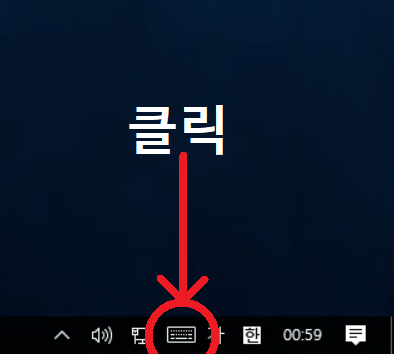
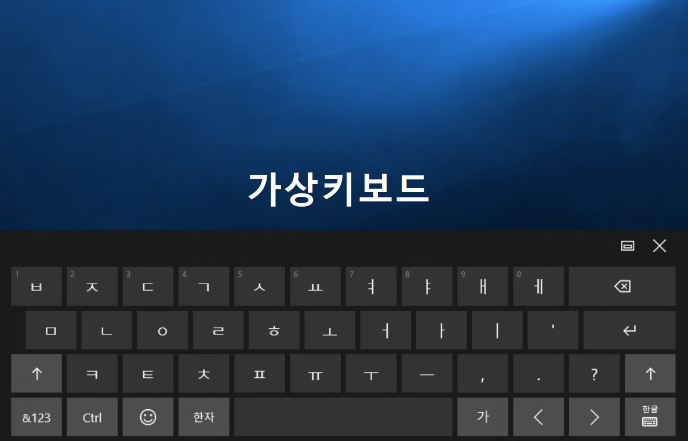
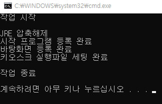

키오스크 자동실행 프로그램
전원만 키면 자동으로 비번 입력 및 영업시작까지!
오픈 친구들 시간을 절약할 수 있어요.
설치 방법
-
가상키보드 열기


이 키보드 이용하여 브라우저에 URL 입력
- 프로그램 다운로드
대부분 32bit 버전 다운로드
신규매장 64bit 버전 다운로드Tip: 두 버전 모두 다운 후 시도해보셔도 됩니다.
- 압축 해제
- 파일에 우클릭 ➝ 압축 풀기 선택
- 파일을 길게 터치하면 우클릭이 됩니다.
- 혹은 파일 더블 클릭 후 압축풀기 클릭
▼(아래 이미지 참조)

- setup 파일 더블클릭

▲ 위 이미지 처럼 나온다면 정상 설치 완료
사용 방법
설치 완료 후 재부팅 하셔서 자동으로 실행되는지 확인!
키오스크 비밀번호는 꼭 '9999' 로 설정해주세요